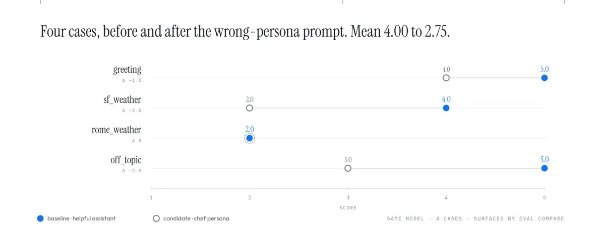

代理品質爬山術：平均 2.75 的兩種病，只有逐案分得出來
導讀原文：Google Developers〈Hill-Climbing Agent Quality with Agents CLI Evaluation〉— 實作導覽，用 Agents CLI v1.8.0 的 LangChain 模板把 eval 迴圈從第一次跑分走到排程與告警
在 demo 上會動，是一個週末的事；換了模型、換了工具、換了對話形態之後還會動，靠的是一圈圈的爬山。Agents CLI 的 eval 命名空間，就是為這圈設計的五個小指令。

五個指令分工：generate 逐案跑出軌跡、grade 打分、compare 兩份結果並排 diff、analyze 把失敗聚類成主題、optimize 對 prompt 跑自動爬山（目前僅支援 ADK 專案）。
一輪：改一行字串，掉 1.25 分
示範骨架是 v1.8.0 內附的 LangChain 模板，一行指令建好專案就帶著資料集、eval_config.yaml 與自訂評審 response_quality.py。評審是 gemini-3.8-flash，就 accuracy、relevance、clarity 打 1–5 分。
內建資料集只有一個平凡案例。作者先擴成四案：打招呼、舊金山天氣（mock 工具固定回「起霧」）、羅馬天氣（工具走預設值），以及一題得自己決定怎麼處理的離題問題（2024 世界大賽）。
原文對 4.00 的解讀：平坦的 5.0 只代表兩件事——代理完美（罕見），或資料集太簡單到看不出差異。有真實離散度，才是一座有坡可爬的山。
- 01app/agent.pysystem_prompt 換成主廚人格
- 02eval generate四案跑成軌跡，寫進 output/
- 03eval grademean 2.7500、stdev 0.9574
- 04eval compare兩份結果並排，逐案 differences
- 05decide基準 4.0000 → 2.7500，回退
本站重繪；原圖（上）只給四步名稱，指令、路徑與分數取自原文示範輸出（四案、gemini-3.8-flash 評審）。「決定」仍由人做：原文的迴圈圖只界定決策點，未描述自動回退機制。
一字串的改動能編譯、能跑，lint、單元測試、型別檢查全數放行。唯一出聲的是分數：基準 4.0000（標準差 1.4142）掉到 2.7500，標準差收窄到 0.9574——多數案例被推進同一段平庸區間。
分數只是總量。analyze 把失敗聚類成主題，替下一輪指出該動哪裡；compare 的 differences 要逐案讀，原文建議用 jq 或小支 Python 抽訊號。
兩個 2.75，兩種病

sf_weather 的壞法最典型：工具還註冊著、程式跑得動，變的是模型對工具的行為——它不理 get_weather，自己編天氣。羅馬那題基準就停在 2.0，本來就在幻覺，主廚人格沒讓它更糟。
換後端那次，system prompt 還原成「helpful assistant」，只把 gemini-3.8-flash 換成 gemini-2.5-flash。平均同為 2.75，逐案故事卻相反：greeting 5.0 → 5.0、rome_weather 2.0 → 2.0 原封不動，sf_weather 4.0 → 3.0。
跌幅集中在 off_topic 5.0 → 1.0：便宜模型以「該事件尚未發生」拒答，原文歸因訓練截止。只看平均，兩種改動一樣糟；看逐案，換小模型對前三類負載是合理替換。要不要換，取決於線上問題分佈像哪一案。
換模型實驗的兩個但書：模型替換會和 prompt 互相作用，為強模型調過的 prompt 搬到弱模型常會漏能力；正確比較是「弱模型＋替它調過的 prompt」對「強模型＋自己的 prompt」。評審由 Vertex AI Eval Service 呼叫，兩次比較評審固定不變；換評審是另一個實驗。
接上排程、告警與自動改 prompt
Agents CLI 不附排程器，但 eval 指令能直接塞進 cron 或 Cloud Scheduler：每晚 generate＋grade，對數十到數百案的回歸集跑分，抓廠商悄悄升級模型、工具資料變動這類不是你改的漂移。
告警得自己包一支腳本：新一輪平均與 known-good 相比，跌幅超過門檻就以非零 exit code 結束。實跑輸出 FAIL: mean dropped 4.000 → 2.750 (drop 1.250 > threshold 0.1)、exit 1；自己比自己 drop 0.000、exit 0。
| 設定 | 原文值 | 為什麼 |
|---|---|---|
| 內圈資料集 | 4 案，一分鐘內跑完 | 小到每次改動都跑得動，迴圈才划算 |
| 回歸資料集 | 數十到數百案，一天跑一次 | 用涵蓋面換深度；跑太久會變成 release gate，最後成沒人跑的 shelfware |
| 告警門檻 | 示範設 0.1（腳本預設 0.05） | 跌幅超標即非零 exit code，由外層排程器接手通知 |
| 快照什麼 | 完整 results JSON，不是平均分 | 三週後回歸浮現時，compare 才指得出是哪一案動了 |
| 版控 | 資料集（輸入）與 eval config（期望）分開存 | 分開才看得出是題目變了還是判準變了 |
| 自動改 prompt | optimize＋GEPA，僅 ADK 專案 | LangChain 擴充不支援；只動 prompt，工具、結構與模型固定 |
→ 可橫向滑動
示範分數、門檻與資料集規模均出自原文的示範專案（Google 自報，無第三方驗證）。
optimize 是唯一會自己動手的指令：吃資料集與目標指標，提 prompt 變體、逐一打分、留下變好的，輸出按分數排序的候選交人審。
GEPA 有時只是找到更貼合指標措辭的變體（對指標過擬合），審查的人就是控制項。
原文最反直覺的自證：改用 agents-cli 的 coding agent，eval 次數是四倍，跑完真的去改代理的頻率卻和基準差不多。增益來自一開始就放進 build 的 skills——eval 是必要條件，品質來自對結果動手。
帶走三件事
滿分是紅旗，會掉分的基準才是資產。4.00 配 1.41 才有坡可爬；平坦的 5.0 多半是資料集太簡單。
回歸的單位是案例，不是平均。兩次都 2.75：一次是全面平庸，一次只斷一種工作負載。
分數要接上 exit code 才有牙齒。四倍 eval 沒換來四倍修正，缺的是有人對結果動手。
同一主題的其他館藏
導讀為本站編輯內容（AI 摘解自官方原文與館藏重點，非官方文件）；引述數據、指令與案例分數均出自原文的示範專案（Agents CLI v1.8.0 內附 LangChain 模板、四案例、gemini-3.8-flash 評審），圖解與小標為編輯整理。內容經對照原文的獨立事實審查後發布。